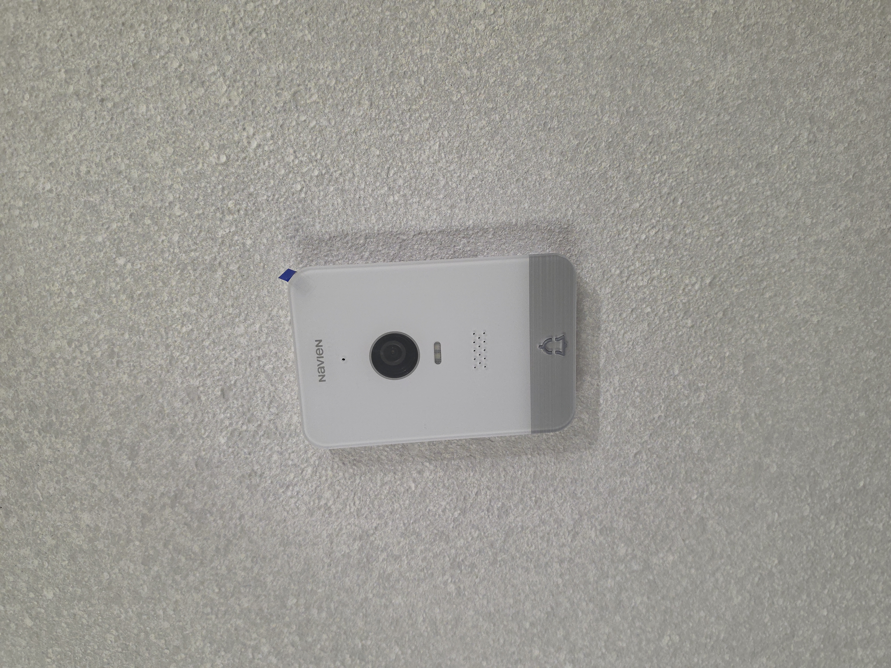
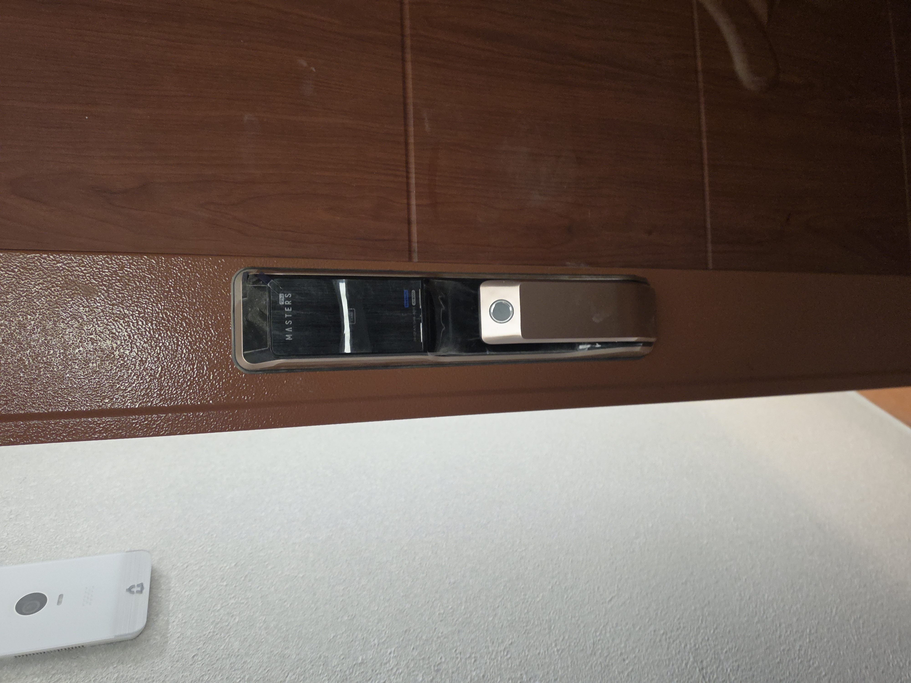

PHOTO 01 · 현관 초인종현관 앞 초인종(도어카메라) 호출
현관문 옆에 설치된 초인종 카메라입니다. 방문자가 호출 버튼을 누르면 실내 비디오폰으로 즉시 영상과 음성이 전달되어 바깥 상황을 정확히 확인할 수 있습니다.
방문자가 초인종을 누를 때마다 현관문까지 걸어가서 수동으로 문을 열어주고 계신가요? 기존에 쓰시던 비디오폰과 현관 디지털 도어락에 전용 무선 연동 모듈을 연결하면, 거실 비디오폰 화면으로 얼굴을 확인한 뒤 문열림 버튼 한 번으로 세대 현관문까지 즉시 개방됩니다.
현관 초인종부터 거실 비디오폰, 현관 도어락까지 하나의 시스템으로 연결된 현장 모습입니다.

PHOTO 01 · 현관 초인종현관문 옆에 설치된 초인종 카메라입니다. 방문자가 호출 버튼을 누르면 실내 비디오폰으로 즉시 영상과 음성이 전달되어 바깥 상황을 정확히 확인할 수 있습니다.
 PHOTO 02 · 실내 비디오폰
PHOTO 02 · 실내 비디오폰
실내 비디오폰(월패드) 내부에 전용 무선 연동 송신기를 결선했습니다. 화면으로 방문자를 확인한 뒤 모니터의 열쇠(문열림) 버튼을 누르면 도어락으로 개방 신호를 보냅니다.

PHOTO 03 · 도어락 연동 완료현관 디지털 도어락 실내측 건전지 커버 안쪽에 무선 수신 모듈을 장착해 주파수를 매칭했습니다. 비디오폰 버튼을 누르자마자 도어락 잠금이 해제되며 문이 열립니다.
평소엔 사소해 보이지만, 한 번 설치해 두면 매일의 생활 동선과 안전이 완전히 달라집니다.
무릎·허리가 불편하신 부모님이나 환자분이 계신 집에서는 초인종이 울릴 때마다 현관까지 이동하는 것 자체가 큰 부담이고 낙상 위험이 됩니다. 거실 소파나 식탁 근처 비디오폰 버튼 하나로 안전하게 문을 열어드릴 수 있습니다.
망우·상봉·면목 일대 다세대·단독주택이나 복층 구조에서는 현관문이 거실과 멀리 떨어져 있어 벨이 울릴 때마다 신발장까지 뛰어가는 번거로움이 큽니다. 1층 공동현관과 세대 현관문을 비디오폰 한 자리에서 연속으로 열어줄 수 있습니다.
아이를 안고 있거나 주방에서 요리 중일 때, 화상회의 중일 때 비밀번호를 누르지 못하는 가족이나 지인이 오면 비디오폰 버튼만 톡 눌러 바로 들여보낼 수 있습니다.
인테리어 후 비디오폰이나 도어락을 새로 바꿨는데 문열림 버튼이 작동하지 않는 경우가 많습니다. 기기 전체를 다시 바꿀 필요 없이 브랜드별 호환 연동기(송·수신 모듈)만 추가하면 기존 기기 그대로 문열림 기능이 살아납니다.
| 연동 가능 비디오폰 | 코맥스(COMMAX), 코콤(KOCOM), 현대HT, 삼성, 경동나비엔 등 대부분의 구형·신형 비디오폰 및 월패드 |
|---|---|
| 연동 가능 도어락 | 삼성·직방, 게이트맨, 솔리티, 탱크, 에버넷, 유니코 등 연동 모듈 슬롯이 있는 디지털 도어락 전 기종 |
| 시공 방식 및 소요 시간 | 벽면 타공 없는 무선 송·수신기 매칭 방식 (현장 도착 후 약 20~30분 내 설치 및 테스트 완료) |
| 출장 가능 지역 | 서울 중랑구 망우동 · 상봉동 · 면목동 및 묵동 · 신내동 · 중화동 당일 출장 |
도어마스터(서울경기월패드)는 서울 중랑구 망우동, 상봉동, 면목동 전 지역에서 도어락과 비디오폰 연결 문열림 기능 설치를 전문으로 진행합니다. 사용 중인 ① 실내 비디오폰 모델명(전면 사진)과 ② 현관 도어락 실내측 건전지 커버를 연 사진 두 장을 문자로 보내주시면 연동 가능 여부와 비용을 즉시 안내해 드립니다.